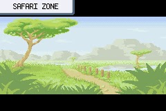
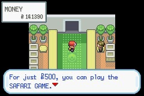
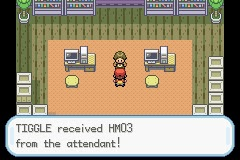
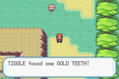
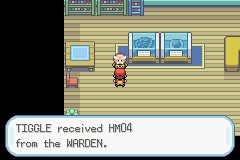

บทที่ 17 / 29
ซาฟารีโซน<Safari Zone>
❖


เราจะต้องเสียค่าใช้จ่าย500 ในการเข้าไป ให้เราไปทางตามลำดับต่อไปนี้ ขวาบน ซ้ายบน ซ้ายล่าง (ที่จริงยังมีทางอื่นอีก) ให้ถึงโซนข้างในสุด อย่าเพิ่งเถลไถลกลางทาง เพราะเราเดินในซาฟารีได้เพียง600ก้าวเท่านั้นแล้วให้เราหาบ้าน คุยกับคนจะได้HM03 Surf เป็นท่าโต้คลื่น และให้เราเก็บฟันทอง<Gold Teeth> ที่อยู่หน้าบ้านแล้ว


แล้วให้เราออกจากซาฟารี แล้วไปคุยกับผอ.ซาฟารีโซนในบ้านที่อยู่ด้านขวาถัดจากPokemon Center สังเกตว่าเขาจะพูดไม่รู้เรื่องเพราะไม่มีฟัน ให้เรามอบฟันทองให้ เขาแล้วเขาจะมอบHM04 Strength ให้เป็นการตอบแทน เป็นท่าดันหิน

เสร็จแล้วเราจะกลับไปซาฟารีโซนเพื่อจับโปเกมอนและเก็บไอเท็มก็ได้ การจับโปเกมอนในซาฟารีโซนจะมี คำสั่งอยู่3คำสั่ง คือ
Ball – โยน Safari Ball ไปจับโปเกมอน โดยเราจะมีบอล30ลูก หากใช้จนหมดเราก็ต้องออกทันที
Bait – โยนอาหารโปเกมอนให้ ทำให้โปเกมอนป่าหนีน้อยลง แต่จะจับยากขึ้น
Rock – โยนก้อนหินใส่โปเกมอนเพื่อทำให้โปเกมอนโกรธ ทำให้โปเกมอนป่าหนีเร็วขึ้น แต่จะจับง่ายขึ้น
โปเกมอนในซาฟารีโซนมีมากมาย อย่าลืมตกปลาและเดินดูให้ครบทั้ง4โซนด้วย มีไอเท็มให้เก็บเยอะทีเดียว
(Tip: ให้พกโปเกมอนที่มีท่า Sweet Scent ไปด้วย แล้วใช้ท่านี้ระหว่างอยู่ในทุ่งหญ้า จะทำให้เจอโปเกมอน
โดยไม่เสียก้าวเดิน : P)
ตอนนี้เราสามารถไปจับโปเกมอนในตำนานตัวแรกได้แล้ว ให้ไปที่ถนนหมายเลข10ไปทางขวาสุด แล้วว่ายน้ำ
ลงมาข้างล่าง